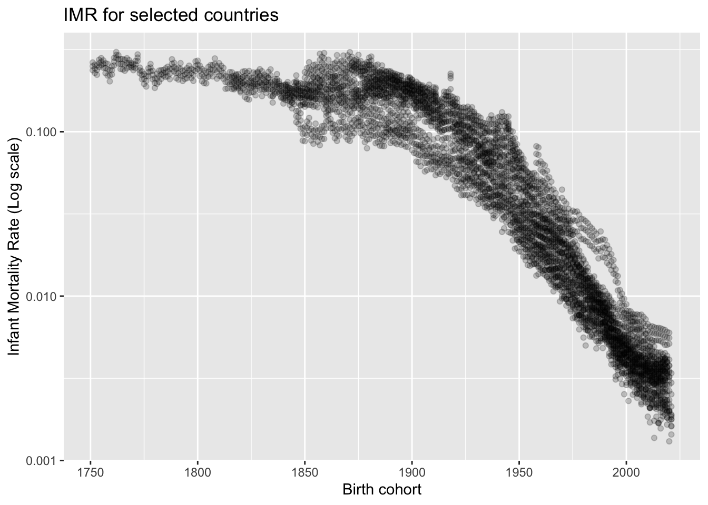
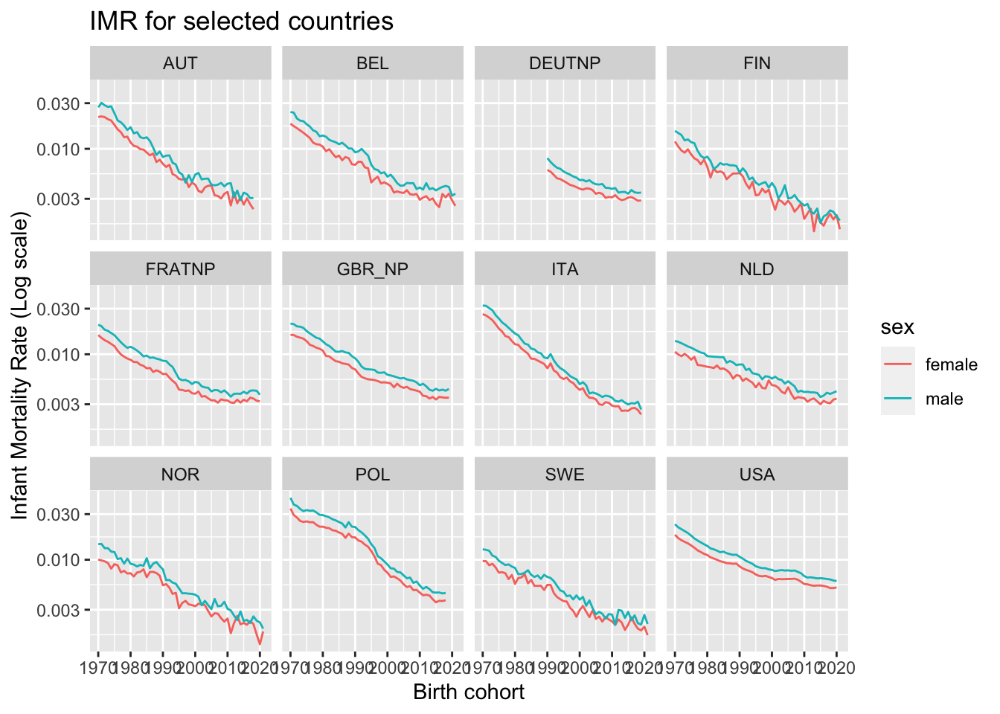
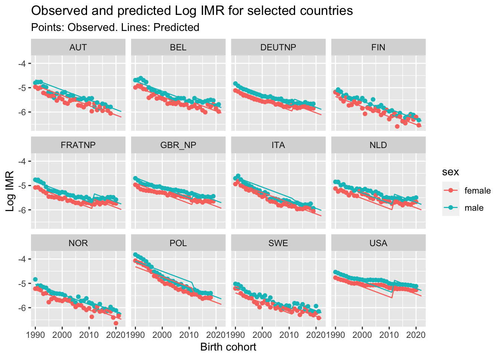

library(tidyverse)
library(HMDHFDplus)
HMDHFDplus::getHMDcountries()
HMDHFDplus::getHMDitemavail("GBR_NP")
# Countries of interest
df <- tibble(
code = c(
"AUT", #Austria
"BEL", #Belgium
"FIN", #Finland
"FRATNP", #France
"DEUTNP", #Germany
"ITA", #Italy
"NLD", #Netherlands
"NOR", #Norway
"POL", #Poland
"SWE", #Sweden
"USA", #USA
"GBR_NP" #UK
)
)
df <- df |>
mutate(
death_tri = map(
code,
function(x) {
HMDHFDplus::readHMDweb(x, "Deaths_lexis",
username = Sys.getenv("HMD_USERNAME"),
password = Sys.getenv("HMD_PASSWORD")
) |>
filter(Age == 0) |>
arrange(Cohort) %>%
set_names(nm = tolower(names(.))) |>
select(-openinterval) |>
pivot_longer(
cols = female:total,
names_to = "sex",
values_to = "deaths"
)
}
),
expos_tri = map(
code,
function(x) {
HMDHFDplus::readHMDweb(x, "Exposures_lexis",
username = Sys.getenv("HMD_USERNAME"),
password = Sys.getenv("HMD_PASSWORD")
) |>
filter(Age == 0) |>
arrange(Cohort) %>%
set_names(nm = tolower(names(.))) |>
select(-openinterval) |>
pivot_longer(
cols = female:total,
names_to = "sex",
values_to = "exposures"
)
}
)
)
tidy_df <-
df |>
select(code, death_tri) |>
unnest(death_tri) |>
inner_join(
df |>
select(code, expos_tri) |>
unnest(expos_tri)) |>
filter(year >= cohort) |>
mutate(
tri_type = ifelse(cohort == year, "lower", "upper")
) Modelling Country Effect IMR differences
Aim
This document will show some possible strategies for modelling infant mortality trends over time and differences between populations
Preparation
First we need some data. I’ll take data from the Human Mortality Database
The above uses the HMDHFDPlus package to load data directly from the Human Mortality Database. Unfortunately this works some of the time but not all of the time.
So let’s do the Blue Peter thing and load the dataset we created earlier
library(tidyverse)── Attaching core tidyverse packages ──────────────────────── tidyverse 2.0.0 ──
✔ dplyr 1.1.3 ✔ readr 2.1.4
✔ forcats 1.0.0 ✔ stringr 1.5.0
✔ ggplot2 3.4.3 ✔ tibble 3.2.1
✔ lubridate 1.9.2 ✔ tidyr 1.3.0
✔ purrr 1.0.2
── Conflicts ────────────────────────────────────────── tidyverse_conflicts() ──
✖ dplyr::filter() masks stats::filter()
✖ dplyr::lag() masks stats::lag()
ℹ Use the conflicted package (<http://conflicted.r-lib.org/>) to force all conflicts to become errorstidy_df <- read_rds("data/tidy_df.rds")I’m not sure, but think it’s worth trying to sum up deaths and exposures by cohort to produce lexis parallelograms
lx_par_df <-
tidy_df |>
group_by(code, cohort, sex) |>
reframe(
deaths = deaths[tri_type=='lower'] + deaths[tri_type == 'upper'],
exposures = exposures[tri_type == 'lower'] + exposures[tri_type == 'upper']
)Descriptive plots
Let’s look at how IMR varies over time by country
lx_par_df |>
mutate(
imr = deaths / exposures
) |>
ggplot(aes(x = cohort, y = imr)) +
geom_point(alpha = 0.2) +
scale_y_log10() +
labs(x = "Birth cohort", y = "Infant Mortality Rate (Log scale)",
title = "IMR for selected countries")Warning: Removed 18 rows containing missing values (`geom_point()`).
We should maybe focus on post 1970, and look at sex separately.
lx_par_df |>
mutate(
imr = deaths / exposures
) |>
filter(sex != 'total') |>
filter(cohort >= 1970) |>
ggplot(aes(x = cohort, y = imr, group = paste0(code, sex), colour = sex)) +
geom_line() +
scale_y_log10() +
facet_wrap(~code) +
labs(x = "Birth cohort", y = "Infant Mortality Rate (Log scale)",
title = "IMR for selected countries")
So, in log space, for each country, male IMRs look like female IMRs, but shifted up by a given amount.
This given amount looks similar for all countries. This is a simplifying assumption we can make.
Another simplifying/stylising assumption we can make is that mortality trends over time is log linear. Country effects then further adjust upwards or downwards from this general trend. (This are simply assumptions we can then develop further and critique afterwards. But they’re reasonable starting places.)
We can select a reference country. I think this should be Norway (and aspirational reference country!).
Modelling and model predictions
Running linear regression models
We can start with simple linear regression
training_data <-
lx_par_df |>
mutate(
imr = deaths / exposures
) |>
filter(sex != 'total') |>
filter(cohort >= 1970) |>
mutate(yrs_since_1970 = cohort - 1970) |>
mutate(code = factor(code)) |>
mutate(code = relevel(code, "NOR"))
# First model: only time matters
mod_00 <- lm(log(imr) ~ yrs_since_1970,
data = training_data)
# Second model: sex also matters
mod_01 <- lm(log(imr) ~ yrs_since_1970 + sex,
data = training_data)
# Third model: country also matters
mod_02 <- lm(log(imr) ~ yrs_since_1970 + sex + code,
data = training_data)Comparing models
Each of the above models is more complex (parameterised) than the last. We can test whether the greater complexity is justified using F-tests (via ANOVA) and using something like BIC and AIC
anova(mod_00, mod_01)Analysis of Variance Table
Model 1: log(imr) ~ yrs_since_1970
Model 2: log(imr) ~ yrs_since_1970 + sex
Res.Df RSS Df Sum of Sq F Pr(>F)
1 1176 139.76
2 1175 124.64 1 15.117 142.51 < 2.2e-16 ***
---
Signif. codes: 0 '***' 0.001 '**' 0.01 '*' 0.05 '.' 0.1 ' ' 1# Significantly better going from model 00 to model 01
anova(mod_01, mod_02)Analysis of Variance Table
Model 1: log(imr) ~ yrs_since_1970 + sex
Model 2: log(imr) ~ yrs_since_1970 + sex + code
Res.Df RSS Df Sum of Sq F Pr(>F)
1 1175 124.642
2 1164 34.061 11 90.581 281.41 < 2.2e-16 ***
---
Signif. codes: 0 '***' 0.001 '**' 0.01 '*' 0.05 '.' 0.1 ' ' 1# Significantly better going from model 01 to model 02
AIC(mod_00, mod_01, mod_02) df AIC
mod_00 3 837.9330
mod_01 4 705.0831
mod_02 15 -801.1207# Mod 02 much better than the other two models
BIC(mod_00, mod_01, mod_02) df BIC
mod_00 3 853.1477
mod_01 4 725.3694
mod_02 15 -725.0471# Mod 02 much better than the other two modelsThe above all indicate country effects should be included.
Interpreting model output
The best of the three models has the following summary output
summary(mod_02)
Call:
lm(formula = log(imr) ~ yrs_since_1970 + sex + code, data = training_data)
Residuals:
Min 1Q Median 3Q Max
-0.46509 -0.11908 -0.01855 0.10214 0.52216
Coefficients:
Estimate Std. Error t value Pr(>|t|)
(Intercept) -4.5093895 0.0195899 -230.190 < 2e-16 ***
yrs_since_1970 -0.0376992 0.0003454 -109.162 < 2e-16 ***
sexmale 0.2265635 0.0099681 22.729 < 2e-16 ***
codeAUT 0.3460287 0.0240880 14.365 < 2e-16 ***
codeBEL 0.3316310 0.0237221 13.980 < 2e-16 ***
codeDEUTNP 0.2018375 0.0279058 7.233 8.56e-13 ***
codeFIN -0.1029358 0.0237221 -4.339 1.55e-05 ***
codeFRATNP 0.2476061 0.0238387 10.387 < 2e-16 ***
codeGBR_NP 0.3874066 0.0239606 16.168 < 2e-16 ***
codeITA 0.3610769 0.0239606 15.070 < 2e-16 ***
codeNLD 0.2029796 0.0238387 8.515 < 2e-16 ***
codePOL 0.8997065 0.0240880 37.351 < 2e-16 ***
codeSWE -0.0955273 0.0237221 -4.027 6.02e-05 ***
codeUSA 0.6143548 0.0238387 25.771 < 2e-16 ***
---
Signif. codes: 0 '***' 0.001 '**' 0.01 '*' 0.05 '.' 0.1 ' ' 1
Residual standard error: 0.1711 on 1164 degrees of freedom
Multiple R-squared: 0.9332, Adjusted R-squared: 0.9324
F-statistic: 1250 on 13 and 1164 DF, p-value: < 2.2e-16The model predicts that, each year, log IMR falls by -0.0376992. The exponent of this is 0.9630026, so on average each year IMR falls by about 3.7% compared with the previous year.
Note: To test for slowdown, include additional time-related terms, such as whether the year is 2012 or after. Then use ANOVA/AIC/BIC to see if the additional term is justified by better fit.
Similarly, the exponents of the sex and country terms indicate what % higher or lower male IMR is than female, and how much higher it is in specific countries compared with Norway.
implied_hazard_shifts <-
broom::tidy(mod_02) |>
filter(str_detect(term, "code|sex") ) |>
mutate(term = str_remove(term, "sex")) |>
mutate(term = str_remove(term, "code")) |>
select(term, estimate) |>
mutate(hazard_shift = exp(estimate)) |>
arrange(desc(hazard_shift))
implied_hazard_shifts# A tibble: 12 × 3
term estimate hazard_shift
<chr> <dbl> <dbl>
1 POL 0.900 2.46
2 USA 0.614 1.85
3 GBR_NP 0.387 1.47
4 ITA 0.361 1.43
5 AUT 0.346 1.41
6 BEL 0.332 1.39
7 FRATNP 0.248 1.28
8 male 0.227 1.25
9 NLD 0.203 1.23
10 DEUTNP 0.202 1.22
11 SWE -0.0955 0.909
12 FIN -0.103 0.902Over this time period, IMRs in Poland are on average 146% higher (100 * (2.46 - 1)) than for the reference country, Norway. The next highest increased risk is living in the USA, where the IMR risks are 85% higher then in Norway, then in the UK (GBR_NP), where the risks are 47% higher. Only Sweden and Finland have lower IMR risks then Norway, with IMR risks around 9-10% lower.
For comparison, the male IMR is on average higher 25% than the corresponding female IMR.
Examples of more complex models (e.g. to test Austerity hypotheses)
We can consider specifications that ‘flag’ years after 2012 as different from previous years. We can also look at specifications where these flags apply differently by countries.
mod_03 <- lm(log(imr) ~ yrs_since_1970 + sex + code + post_2012,
#post_2012 is our 'flag'
data = training_data |>
mutate(post_2012 = cohort >= 2012)
)
mod_04 <- lm(log(imr) ~ yrs_since_1970 + sex + code * post_2012,
#post_2012 is our 'flag'. The * after code means it interacts with country (i.e. is experienced differently in) different countries
data = training_data |>
mutate(post_2012 = cohort >= 2012)
# n.b. we can just about use cohort as year as looking at IMR
)We can compare these models using the same strategy as before:
anova(mod_02, mod_03)Analysis of Variance Table
Model 1: log(imr) ~ yrs_since_1970 + sex + code
Model 2: log(imr) ~ yrs_since_1970 + sex + code + post_2012
Res.Df RSS Df Sum of Sq F Pr(>F)
1 1164 34.061
2 1163 29.523 1 4.5384 178.78 < 2.2e-16 ***
---
Signif. codes: 0 '***' 0.001 '**' 0.01 '*' 0.05 '.' 0.1 ' ' 1# significantly better
anova(mod_03, mod_04)Analysis of Variance Table
Model 1: log(imr) ~ yrs_since_1970 + sex + code + post_2012
Model 2: log(imr) ~ yrs_since_1970 + sex + code * post_2012
Res.Df RSS Df Sum of Sq F Pr(>F)
1 1163 29.523
2 1152 22.415 11 7.1083 33.212 < 2.2e-16 ***
---
Signif. codes: 0 '***' 0.001 '**' 0.01 '*' 0.05 '.' 0.1 ' ' 1# also significnatly better
AIC(mod_00, mod_01, mod_02, mod_03, mod_04) df AIC
mod_00 3 837.9330
mod_01 4 705.0831
mod_02 15 -801.1207
mod_03 16 -967.5715
mod_04 27 -1270.0583BIC(mod_00, mod_01, mod_02, mod_03, mod_04) df BIC
mod_00 3 853.1477
mod_01 4 725.3694
mod_02 15 -725.0471
mod_03 16 -886.4263
mod_04 27 -1133.1258# The most complex also preferredsummary(mod_04)
Call:
lm(formula = log(imr) ~ yrs_since_1970 + sex + code * post_2012,
data = mutate(training_data, post_2012 = cohort >= 2012))
Residuals:
Min 1Q Median 3Q Max
-0.45053 -0.08771 -0.00708 0.08331 0.43355
Coefficients:
Estimate Std. Error t value Pr(>|t|)
(Intercept) -4.4366654 0.0175218 -253.208 < 2e-16 ***
yrs_since_1970 -0.0414092 0.0003743 -110.642 < 2e-16 ***
sexmale 0.2265635 0.0081282 27.874 < 2e-16 ***
codeAUT 0.3589119 0.0215235 16.675 < 2e-16 ***
codeBEL 0.3070072 0.0215235 14.264 < 2e-16 ***
codeDEUTNP 0.1783128 0.0262268 6.799 1.69e-11 ***
codeFIN -0.0990956 0.0215235 -4.604 4.60e-06 ***
codeFRATNP 0.1953260 0.0215235 9.075 < 2e-16 ***
codeGBR_NP 0.3576237 0.0215235 16.615 < 2e-16 ***
codeITA 0.3864829 0.0215235 17.956 < 2e-16 ***
codeNLD 0.1444401 0.0215235 6.711 3.03e-11 ***
codePOL 0.9476619 0.0215235 44.029 < 2e-16 ***
codeSWE -0.1280075 0.0215235 -5.947 3.61e-09 ***
codeUSA 0.5409430 0.0215235 25.133 < 2e-16 ***
post_2012TRUE 0.1137773 0.0360440 3.157 0.001638 **
codeAUT:post_2012TRUE -0.0897526 0.0531622 -1.688 0.091628 .
codeBEL:post_2012TRUE 0.1280435 0.0490812 2.609 0.009203 **
codeDEUTNP:post_2012TRUE 0.1817031 0.0536628 3.386 0.000733 ***
codeFIN:post_2012TRUE -0.0199693 0.0490812 -0.407 0.684184
codeFRATNP:post_2012TRUE 0.2959535 0.0501707 5.899 4.80e-09 ***
codeGBR_NP:post_2012TRUE 0.1859303 0.0515007 3.610 0.000319 ***
codeITA:post_2012TRUE -0.1590001 0.0515007 -3.087 0.002068 **
codeNLD:post_2012TRUE 0.3314227 0.0501707 6.606 6.02e-11 ***
codePOL:post_2012TRUE -0.3352580 0.0531622 -6.306 4.06e-10 ***
codeSWE:post_2012TRUE 0.1688973 0.0490812 3.441 0.000600 ***
codeUSA:post_2012TRUE 0.4156994 0.0501707 8.286 3.23e-16 ***
---
Signif. codes: 0 '***' 0.001 '**' 0.01 '*' 0.05 '.' 0.1 ' ' 1
Residual standard error: 0.1395 on 1152 degrees of freedom
Multiple R-squared: 0.956, Adjusted R-squared: 0.9551
F-statistic: 1001 on 25 and 1152 DF, p-value: < 2.2e-16Because of the presence of interaction terms, the coefficients are now somewhat harder to interpret directly. Instead, we can look at the predicted values they imply, and how they differ between countries.
Showing what a model specification predicts
pred_df <-
expand_grid(
cohort = 1990:2022,
sex = c("male", "female"),
code = c(
"AUT", #Austria
"BEL", #Belgium
"FIN", #Finland
"FRATNP", #France
"DEUTNP", #Germany
"ITA", #Italy
"NLD", #Netherlands
"NOR", #Norway
"POL", #Poland
"SWE", #Sweden
"USA", #USA
"GBR_NP" #UK
)
) |>
mutate(
yrs_since_1970 = cohort - 1970,
post_2012 = cohort >= 2012
)
preds <- predict(mod_04, newdata = pred_df)
preds_pred_df <-
pred_df |>
mutate(
pred_limr = preds
)Now to visualise
preds_pred_df |>
left_join(training_data) |>
mutate(
obs_limr = log(imr)
) |>
ggplot(aes(x = cohort, color = sex)) +
geom_point(aes(y = obs_limr)) +
geom_line(aes(y = pred_limr)) +
facet_wrap(~code) +
labs(x = "Birth cohort",
y = "Log IMR",
title = "Observed and predicted Log IMR for selected countries",
subtitle = "Points: Observed. Lines: Predicted")Joining with `by = join_by(cohort, sex, code, yrs_since_1970)`Warning: Removed 54 rows containing missing values (`geom_point()`).
The lines showing the model predictions show the importance of structural assumptions in the model. The model assumes a constant annual rate of mortality improvement throughout the whole series, and then allows the line over time to be moved upwards or downwards in log space for 2012 onwards.
Deciding whether a more complex model is worth its additional complexity
For countries where there has been slowdown after around 2012, this structural assumption might not be appropriate. Instead we should consider models in which the rate of improvement over time itself is allowed to be different after 2012 than before. As before we can build this model specification and compared the penalised fit.
mod_05 <- lm(log(imr) ~ yrs_since_1970 + sex + code * yrs_since_2012,
#Now using yrs_since_2012, which allows change in slope not just intercept
data = training_data |>
mutate(
post_2012 = cohort >= 2012,
yrs_since_2012 = ifelse(
post_2012,
cohort - 2012,
0
)
)
# n.b. we can just about use cohort as year as looking at IMR
)Compare the models
AIC(
mod_00, mod_01, mod_02, mod_03, mod_04, mod_05
) df AIC
mod_00 3 837.9330
mod_01 4 705.0831
mod_02 15 -801.1207
mod_03 16 -967.5715
mod_04 27 -1270.0583
mod_05 27 -1210.8527BIC(
mod_00, mod_01, mod_02, mod_03, mod_04, mod_05
) df BIC
mod_00 3 853.1477
mod_01 4 725.3694
mod_02 15 -725.0471
mod_03 16 -886.4263
mod_04 27 -1133.1258
mod_05 27 -1073.9203The model allowing a different slope for post 2012 doesn’t outperform the simpler model which simply adjusts the trend upwards or downwards. This suggests that the simpler model may be ‘good enough’ for producing summary estimates of how large any post 2012 slowdown may have been in IMR trends for different countries, even though it’s qualitatively not quite the pattern we see in the data.
Further model specifications, representing different theories about these trends and how they differ between places, can also be tried. In particular models including one or more breakpoints in the IMR trends may be worth looking at, as in this paper. (i.e. the code in that paper, which looks at \(e_0\) and \(e_{65}\), could also be applied to IMR trends as well.)
Summarising the ‘good enough’ model
Model 04, which is structurally overly ‘stylised’ (i.e. doesn’t look right) but still preferred over the more complex model 05, allows for single summary estimates of what’s happened to IMR trends post 2012. Or more specifically by what % earlier trends were ‘set back’ compared with the pre 2012 period.
As Norway is the reference category, we know the coefficient post_2012TRUE corresponds to Norway. This coefficient is about 0.0114. The exponent of this is 1.12, so around a 12% higher IMR for Norway compared with the pre 2012 trend.
For other countries, the post_2012TRUE coefficient needs to be added to the country-specific coefficient (e.g. post_2012TRUE + codeGBR_NP:post_2012TRUE for the UK), before exponentiating.
For the UK the estimate of how much IMRs were set back from 2012 onwards is exp(0.1137773 + 0.1859303) , which is 1.349, suggesting that from 2012 IMRs were around 35% higher than the long-term trend.
The following code shows the same for all other countries
broom::tidy(mod_04) |>
filter(str_detect(term, "post_2012")) |>
mutate(
code = str_remove(term, "post_2012TRUE"),
code = str_remove(code, "code"),
code = str_remove(code, ":"),
code = ifelse(code == "", "NOR", code)
) |>
mutate(
delta = ifelse(
code == "NOR",
estimate,
estimate + estimate[code == "NOR"]
)
) |>
mutate(
pct_change = exp(delta)
) |>
select(code, pct_change) |>
arrange(desc(pct_change))# A tibble: 12 × 2
code pct_change
<chr> <dbl>
1 USA 1.70
2 NLD 1.56
3 FRATNP 1.51
4 GBR_NP 1.35
5 DEUTNP 1.34
6 SWE 1.33
7 BEL 1.27
8 NOR 1.12
9 FIN 1.10
10 AUT 1.02
11 ITA 0.956
12 POL 0.801This suggests that the post 2012 period is associated with substantial setbacks in IMR in almost all countries included, with the exception of Italy and Poland. The USA has the highest rate of ‘setback’ relative to earlier trends, with IMR estimated to be around 70% higher than if there had not been a setback from 2012.
Summary
This notebook includes scripts for:
Getting data from a standard resource
Running a series of stylised models of IMR against time
Producing single parameter summaries of sex and country-specific differences in overall trends
Comparing between different model specifications and trying to find the right balance between model complexity and model accuracy
Producing model predictions and plotting these against observed values.
The model specifications considered are not the only models worth considering, and the ‘best’ model presented, model 4, stylises the post 2012 effect in ways that are not especially realistic. However it does allow single summary estimates of differences both prior and post 2012 between countries, and the general strategy can be adapted to other countries and datasets.
Not covered
Other ways of comparing model fit (e.g. RMSE)
Negative binomial modelling (largely the same specification, but may produce more plausible confidence intervals
Appendix: Downloading directly from HMD
The first script downloads directly from the Human Mortality Database.
This requires both registering with the HMD, adding username and password as environment variables to R, and also a lot of luck. To try this out do the following:
- Register with the Human Mortality Database at https://mortality.org. Make sure to record username and password
- Within R, and within the console, set the environment variables as follows:
Sys.setenv(HMD_USERNAME = "<WHATEVER YOUR USERNAME IS>")
Sys.setenv(HMD_PASSWORD = "<WHATEVER YOUR PASSWORD IS>")To test that the environment variables have been set correctly
Sys.getenv("HMD_USERNAME") # Should return username
Sys.getenv("HMD_PASSWORD") # Should return passwordIf these are set correctly, then the first chunk of code should work
- To try this in practice, make sure to change
eval=falsetoeval=truein this first chunk